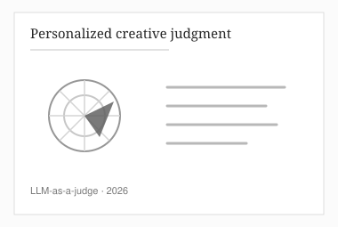

Curiosity-Driven LLM-as-a-Judge for Personalized Creative Judgment
AAAI Workshop on Creative AI for Live Interactive Performances, 2026 (oral)
A curiosity-based objective helps language-model judges adapt to individual evaluators' subjective assessments of creative writing.